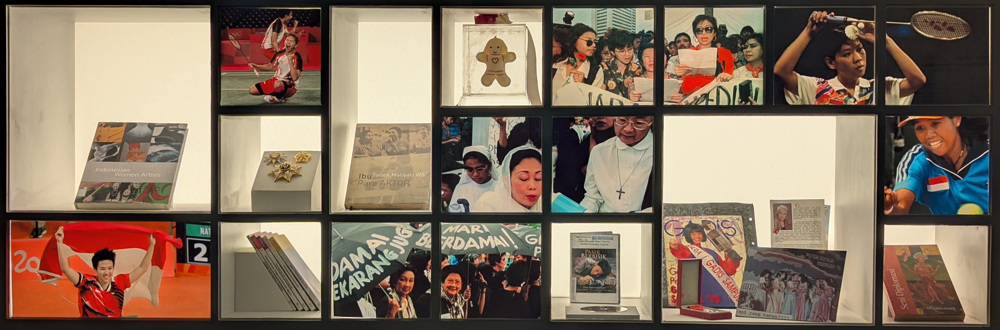

On pense souvent que les musées sont des endroits calmes, figés, silencieux. Et pourtant, cette semaine, au Musée National de Jakarta, j’ai entendu des voix. Celles de femmes indonésiennes qui à travers le temps, ont éduqué, soigné, gouverné, résisté, et surtout existé avec force. En effet, cette semaine j’ai pu visiter une exposition intitulée « SUNTING » au musée national de Jakarta qui rend hommage aux femmes indonésiennes.
Ces femmes n’ont pas seulement marqué l’histoire, mais ont aussi transformé la société, souvent depuis l’ombre.
Malahayati est un symbole du leadership maritime et du courage féminin dans l'histoire de Nusantara. Au XVIe siècle, elle dirigeait le régiment Inong Balee, un bataillon de guerrières veuves qui résistaient courageusement aux puissances étrangères dans les eaux côtières d'Aceh. Ce tableau a été spécialement commandé par le Musée maritime de Jakarta dans les années 1990, avec l'artiste Sunarto Pr parmi les personnes impliquées, dans le cadre d'un effort visant à honorer le rôle des femmes dans l'histoire maritime de l'Indonésie.
Musée national de Jakarta
J’ai aussi découvert comment l’islam indonésien a pu permettre l’émancipation. Par exemple, le groupe Aisyiyah fondé par des femmes musulmanes a permis à des jeunes filles venant de milieux modestes d’accéder aux études supérieures, grâce à un système de bourses installé dès le début du XXe siècle.
La foi et le féminisme ne sont pas opposés ici. Au contraire la foi a souvent permis de marquer et de créer de grands changements en Indonésie.
Ce drapeau contient un certain nombre de symboles de la lutte des femmes indonésiennes, notamment des fleurs de jasmin, symbole de pureté, de parfum et d'unité ; des bourgeons de jasmin, espoir de perpétuation des valeurs nobles pour la prochaine génération ; et cinq feuilles représentant les valeurs du Pancasila. La couleur verte symbolise la croissance et la prospérité des femmes dans l'accomplissement de leur dharma (devoirs). La devise, La liberté d'accomplir le dharma - « Merdeka Melaksanakan Dharma » affirme l'esprit de liberté totale lorsque les femmes sont libérées de toute contrainte, pleinement autonomes et participent activement au développement d'une nation juste.
Musée national de Jakarta
Qu’elles soient journalistes comme Rohana Kudus (fondatrice du premier journal féminin), reines stratèges comme Ida I Dewa Agung Istri Kanya, ou ministres puissantes comme Sri Mulyani, toutes ces femmes ont occupé l’espace public, parfois contre toute attente. Et ont marqué l’histoire.
Cette exposition m’a rappelé que le rôle des femmes ne s’impose pas, il se construit par l’éducation, la mémoire et les luttes. Les femmes que j’ai découvertes n’étaient pas seulement courageuses : elles étaient stratèges, éducatrices, résistantes. Elles ont fait l’histoire, souvent discrètement, mais profondément.
Bien sûr, tout n’est pas parfait. Les inégalités de genre existent toujours en Indonésie, notamment en politique, dans l’accès à certains droits ou dans les zones rurales. Mais voir ces histoires de femmes mises en lumière donne de l’espoir.
Le 21 avril, on célèbre R.A. Kartini, pionnière de l’émancipation féminine, et plus largement toutes celles qui se battent pour l’égalité. Une journée de réflexion, de fierté et de transmission.
Alors bonne fête de Kartini en retard !